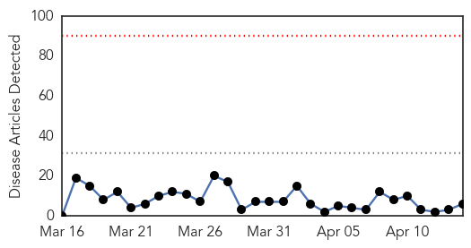
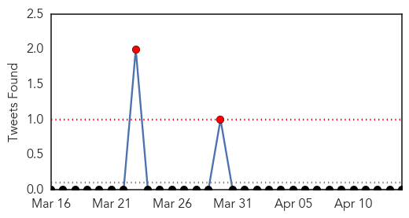
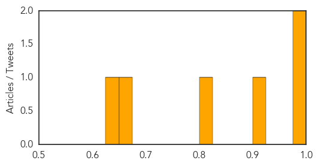
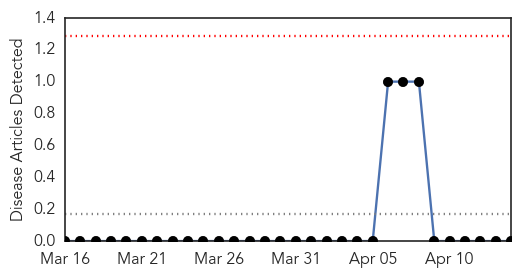

Measles
30-Day Web Trend
0 alerts, 0 warnings

30-Day Twitter Trend
2 alerts, 0 warnings

Article Locations

Article Confidences
Top Articles:
- 0.986
- School officials in Washington state kick 143 kids out of class for no vaccination proof
- 0.985
- These deadly diseases are making a comeback
- 0.919
- Epidemics, public health, Maine
- 0.808
- Amid Resurgence of Diseases Considered All But Eradicated, Clearstream-mPact Cautions That Americans are Still at Risk
- 0.653
- Immunizations âbig deal' for children's health, Abilene nursing official says
- 0.639
- Did Las Vegas Valley measles start at Disneyland?
Top Tweets:
-
No tweets found for Apr 14, 2015
Bubonic Plague
30-Day Web Trend
0 alerts, 0 warnings

30-Day Twitter Trend
0 alerts, 0 warnings

Article Locations

Article Confidences

Top Articles:
-
No articles found for Apr 14, 2015
Top Tweets:
-
No tweets found for Apr 14, 2015